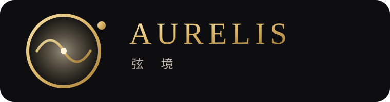
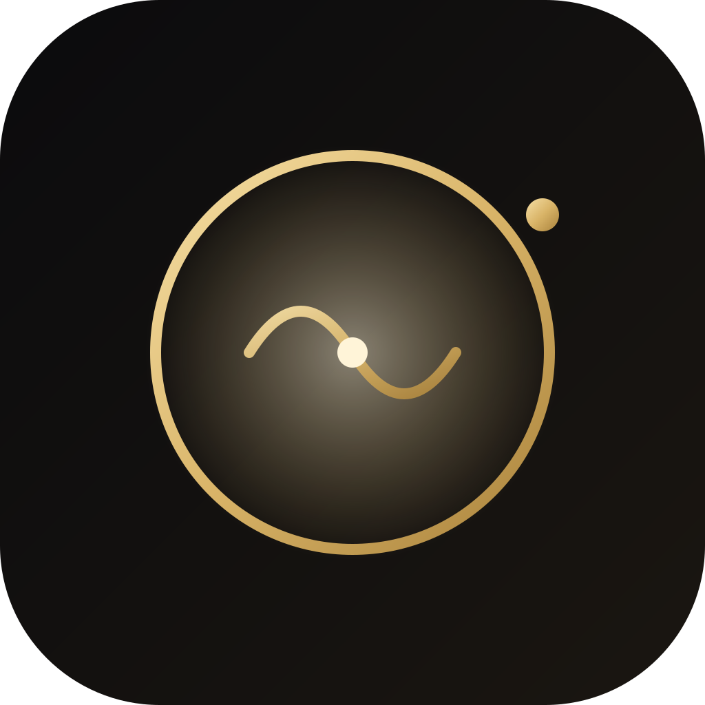
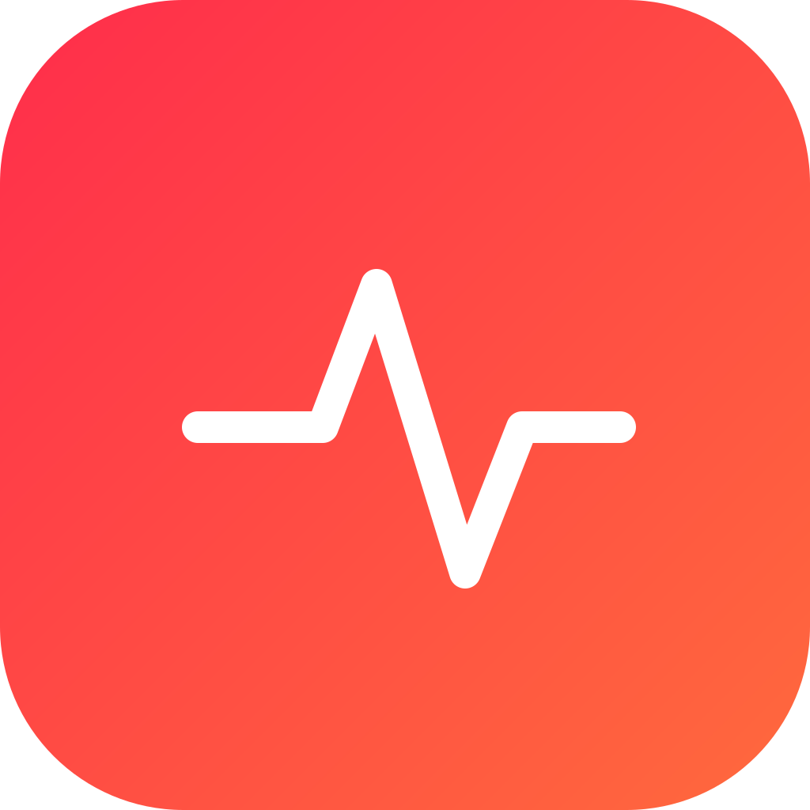
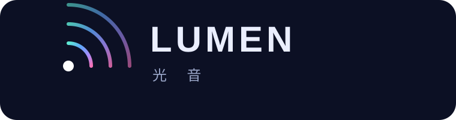
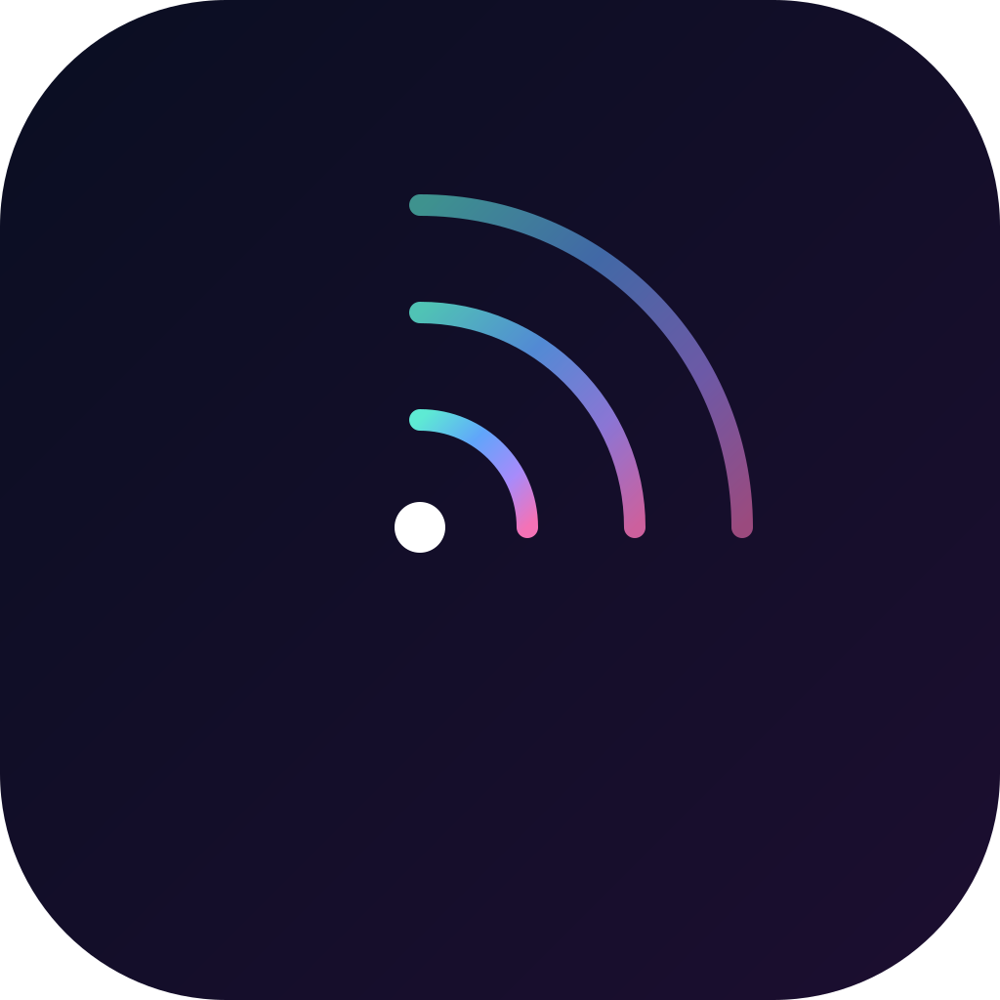
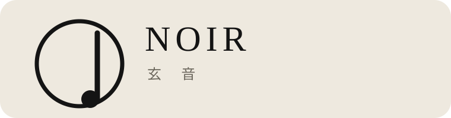
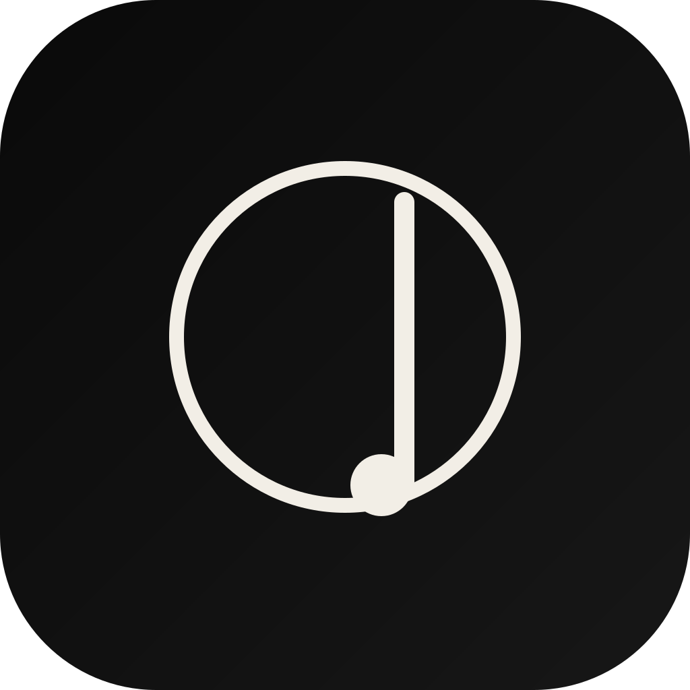

四套方向差异明显的品牌系统，覆盖产品名称、Logo 与应用程序图标。本提案允许脱离现有红白设计规范，追求高端、大气、国际化的视觉质感。


AURELIS = aurum（金）+ resonance（共鸣），意为「金色共鸣」。中文「弦境」取「弦（乐音之本）」与「境（精神空间）」，将音乐喻为一处可居游之境。读音清亮、字形对称，天然携带奢华暗示。
「轨道环 + 波形弧 + 光点」构成声学图腾：外环如黑胶／唱盘／轨道，细金波形描出乐句，顶端金点为律动峰值，中心微光即声源。整体像一枚私人徽章，编辑感强。
深空近黑底 + 暖金渐变环与波形，克制、静奢、无描边。在深色 Dock 与高端硬件上尤其出彩。
声在轨上行进——一枚会发光的收藏家徽章。图形意象 = 「声音沿金色轨道流动」，呼应无损珍藏的定位。

PULSE = 脉搏 / 律动，直指音乐即生命的节拍。中文「脉音」取「脉（血脉·地脉）」与「音」，强调音乐与身体同频。短、冲、好记，全球通用。
圆角方牌内一道心跳脉冲线，白线在红橙渐变上炸开，符号即「P」的变体（脉冲起笔）。强识别、强能量、强记忆点。
满版红橙渐变 + 白色脉冲，无边框、无描边、纯能量块。比现有品牌红更「燃」一档。
一次心跳 / 一声鼓点。图形意象 = 「律动峰值」，在桌面与状态栏里最跳、最抓眼。


LUMEN = 光通量单位（流明），亦近 luminous（发光）。中文「光音」取自佛典「光音天」之乐，把声音可视化为光。科技与诗意并存，国际且空灵。
由一点光源向外的三段虹彩声波扇面，渐变横跨青→蓝→紫→粉，喻「声化作光、层层扩散」。轻盈、通透、未来。
深空极光底 + 虹彩扇弧从白点绽放，像棱镜分光。无实色块、靠光感立形。
图形意象 = 棱镜 / 极光 / 声波衍射。在暗色 Dock 上如一枚会发光的宝石。


NOIR = 法语「黑」，自带电影「黑色电影」的高级与神秘基因。中文「玄音」取「玄（黑·道·深奥）」与「音」，东方哲学里的至深之音。东西合璧，极简即奢侈。
一个细圈（声孔／黑胶）+ 一笔竖线（音符 stem）+ 实心圆点（符头），纯单色、零装饰，像画廊墙上的签名。
纯黑底 + 米白单色符号，无渐变、无色彩、极致克制。去色彩即去噪音。
图形意象 = 黑胶声孔中的一枚音符。在任意背景下都像「设计师出品」。
| 方向 | 名称 | 主色系 | 关键词 | 最适合定位 |
|---|---|---|---|---|
| 01 | AURELIS 弦境 | 暖金 × 近黑 | 静奢 / 编辑 / 收藏 | 高阶听感 · 无损珍藏 · 联名 |
| 02 | PULSE 脉音 | 红橙渐变 | 年轻 / 炽热 / 动能 | 现场感 · 节奏 · 运动听歌 |
| 03 | LUMEN 光音 | 虹彩 × 极光深空 | 空灵 / 未来 / 艺术 | 空间音频 · 沉浸式 · 氛围 |
| 04 | NOIR 玄音 | 纯黑 × 米白 | 极简 / 暗黑 / 画廊 | 专注聆听 · 极简 · 硬件预装 |
四套方案均可突破现有红白设计规范。建议下一步锁定 1 套做系统化延伸——字体 / 动效 / 空状态 / 明暗主题，并做一轮小范围 A/B 验证。